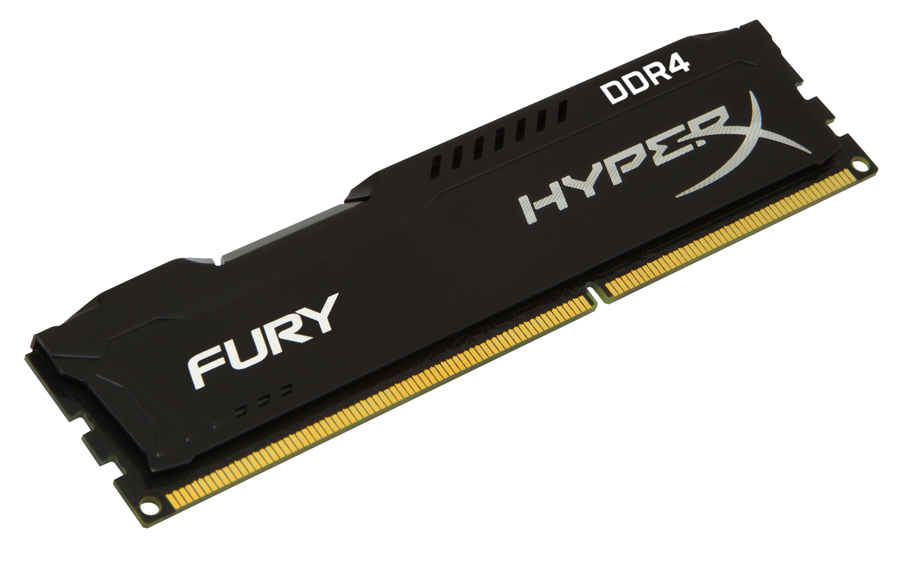

RAM (random access memory) is a computer's short-term memory, where the data that the processor is currently using is stored. Your computer can access RAM memory much faster than data on a hard disk, SSD, or other long-term storage device, which is why RAM capacity is critical for system performance
Random-access memory (RAM; /ræm/) is a form of electronic computer memory that can be read and changed in any order, typically used to store working data and machine code.[1][2] A random-access memory device allows data items to be read or written in almost the same amount of time irrespective of the physical location of data inside the memory, in contrast with other direct-access data storage media (such as hard disks, CD-RWs, DVD-RWs and the older magnetic tapes and drum memory), where the time required to read and write data items varies significantly depending on their physical locations on the recording medium, due to mechanical limitations such as media rotation speeds and arm movement. RAM contains multiplexing and demultiplexing circuitry, to connect the data lines to the addressed storage for reading or writing the entry. Usually more than one bit of storage is accessed by the same address, and RAM devices often have multiple data lines and are said to be "8-bit" or "16-bit", etc. devices.
DDR is the type of RAM that is used most commonly in PCs.
The full form of DDR SDRAM is Double Data Rate Synchronous Dynamic Random-Access Memory. It is just like SDRAM. The only difference between the two is that it has a higher bandwidth, which offers greater speed. Its maximum transfer rate to L2 cache which is approximately 1,064 Mbps.